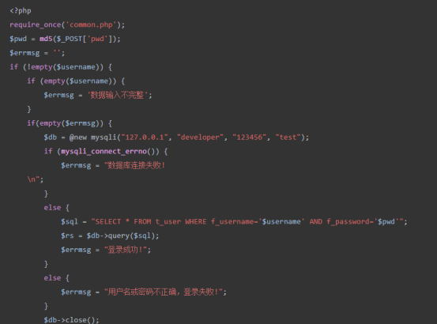
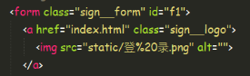
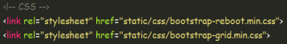
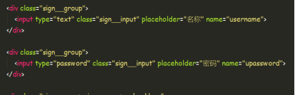
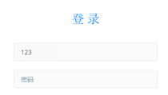
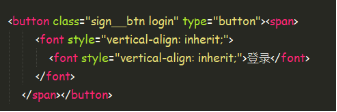
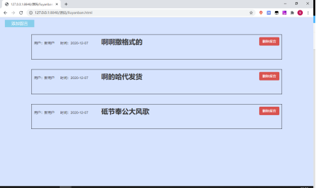
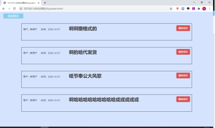

实 验 报 告
学院：计算机科学学院 专业：18计算机科学与技术 2020年12月8日
姓 名 | 学 号 | |||||
班 级 | 指导老师 | 李 念 | ||||
课程名称 | 《WEB前端工程师》 | 成 绩 | ||||
实验名称 | 基于BootStrap框架的响应式网站开发 | |||||
1．实验目的 熟练掌握HTML及CSS的语法及应用 熟悉BootStrap框架的基本语法及常用样式 理解PHP+Mysql的基本语法 掌握利用BootStrap框架开发响应式网站的方法 掌握网站注册与登录页面的实现方法 | ||||||
2．实验内容 完成一个基于BootStrap框架的响应式布局的网站，具体要求如下： （1）网站包含的页面有：注册、登录、首页、留言板页面 （2）布局技术以BootStrap框架为主，可在此基础上自定义CSS样式 （3）利用PHP技术实现图片验证码功能 （4）利用PHP+Mysql技术实现注册注册及登录功能 （5）利用JS或JQuery技术实现两个动态特效 （6）利用Jquery技术实现留言板功能 | ||||||
3．实验环境 Windows 7操作系统 HBuiler软件 Mysql+php集成运行环境 | ||||||
4．实验方法和步骤（含设计） 登录先编写前端html界面，然后用户在登录表单中输入登录信息之后，数据被提交回本页面login.php进行处理。后台处理逻辑： 设置一个错误消息变量，以便判断是否有错误发生 以及在客户端显示错误消息。 其初值为空数据验证 调用mysqli的构造函数建立连接，同时选择使用数据库 $rs->num_rows判断上面的执行结果是否含有记录，有记录说明登录成功  后台逻辑编写好了之后编写前端界面：引入bootstrap 登录标题  用户名和密码    登录按钮： | ||||||
5．程序及测试结果   | ||||||
6．实验分析与体会 最开始决定要学习PHP的时候，主动的接近and认识了一些在PHP方面有过经验的一些师兄。让他们给介绍了经验还有需要看的书籍，资料等等。 然后自己开始慢慢的从基础做了。记得最开始的时候做的是一个跟“正则表达式”有关的东东。就是冲搜索引擎上偷数据。虽然现在看来很简单，但那时看来还是很复杂的。 再后来，开始做一些站点了。在css和javascript方面有有一些学习。以及其他的一些PHP的函数操作。一般都是字符串的操作等等。熟悉一些函数。 后来就是写了一些简单的系统。记得我们班推优入党的时候，我写了一个投票系统，装在一个本里面。带到教室里面去投的。那个时候觉得还不错，现在想想那个投票系统还是有很多的不足的。例如，没有投票次数的限制等等。(但是觉得都是自己班的，应该不会出现什么吧，结果还是出问题了。本来是一人投两票的，结果是出现了单数的总票数，哎哎) 实验日期 ： 2020 年 12 月 8 日 | ||||||
教师评语 签名： 年 月 日 | ||||||